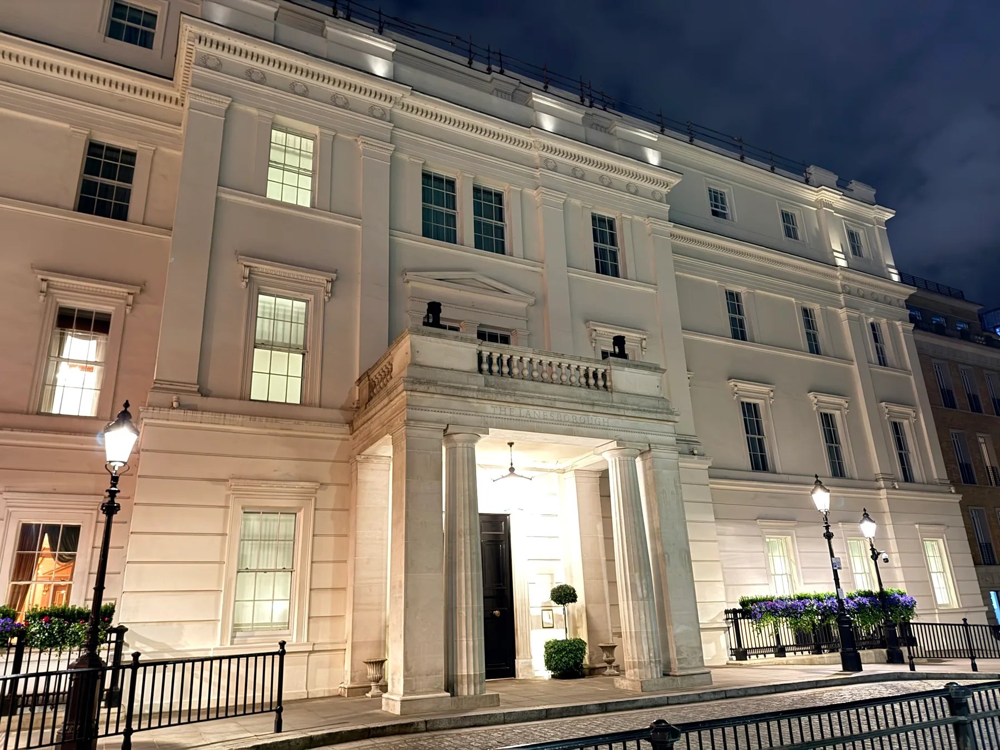

Special Interests/Architecture/The Classical Lineage
Room I — The Classical Lineage
A building made to your measure.
Renaissance, Baroque, Georgian, Neoclassical, Beaux-Arts. Five styles spanning four centuries, all of them descended from the same conviction — that the proportions of a beautiful building should be the proportions of a beautiful human body, and that beauty itself is a question of arithmetic.
The orders, and what they are for
Before any of the styles, there are the orders. The Greeks invented three of them — Doric, Ionic, Corinthian — and the Romans added two more, Tuscan and Composite. An order is not simply a column; it is a complete grammatical system for the bottom half of a building: a base, a shaft, a capital, and the entablature it carries, all proportioned according to fixed ratios derived from the diameter of the column itself.
The orders are personalities. Doric is plain, masculine, soldierly; its capital is a simple cushion and it carries the gravitas of older temples. Ionic is scholarly, recognisable by the spiralling volutes at the corners of its capital — a form sometimes read as the unrolled scroll of a librarian. Corinthian, the youngest, is ornate, with capitals carved into the leaves of the acanthus plant; the Romans loved it precisely because it gave them permission for visible luxury. Tuscan is a stripped-back Doric; Composite is Corinthian crossed with Ionic.
The crucial thing is that every order is a complete grammar. Choose Doric and the entablature it carries must be the Doric entablature; the frieze must run with triglyphs; the cornice must project to a specific depth. The orders are the architectural equivalent of declensions in Latin — a system in which every form implies every other.
- Pediment — the triangular gable above a row of columns.
- Entablature — the horizontal band sitting on the columns (architrave, frieze, cornice).
- Fluting — vertical grooves cut down a column shaft.
- Volute — the spiral scroll on an Ionic capital.
- Acanthus — the deeply serrated leaf carved into Corinthian capitals.
- Coffering — recessed square panels on a vault or ceiling, the Roman trademark.
Symmetry, ratio, and the moral claim
The deep move of the Classical lineage is that proportion is a moral claim. This is not a metaphor. Vitruvius, writing for Augustus in the first century BC, insists that a building must exhibit symmetria — a precise correspondence between the parts and the whole — and that the human body is the model from which those ratios are taken. The navel, in Vitruvius, is the centre of a circle that can be drawn through the extended fingertips and toes. The body, the building, and the cosmos are all governed by the same arithmetic.
Fifteen centuries later, Leonardo's Vitruvian Man is a literal illustration of that passage. And another century after that, Andrea Palladio's Quattro Libri codifies the surviving ratios — 1:2, 2:3, 3:4, 3:5, 4:5 — as the only legitimate relationships between the length, width, and height of a room. To build with the wrong ratios is, in this view, to mistate something about reality.
Symmetry then becomes not a stylistic preference but a structural one: a Classical façade is symmetrical about a central axis because asymmetry would imply that the universe was lopsided. The pediment over the door is a small reminder of the sky over a temple, which is a small reminder of order over chaos.
A Classical building flatters you. It says: a human being is the right size for the world, and a well-made room can prove it.
The Renaissance — citation as worldview
When Brunelleschi worked out the dome of Florence Cathedral in the 1420s, he was doing something stranger than building a roof. He was arguing — by example — that the Roman achievement was recoverable, that the present could speak directly to antiquity without the thousand intervening medieval years. The Renaissance is the Classical lineage's self-conscious phase. Every dome, pilaster, and pediment is a citation.
Three names carry the story. Brunelleschi proves the dome can be done. Alberti writes the first modern treatise on architecture (De re aedificatoria, 1452) and argues that beauty is the result of a concinnitas — a fittingness — that no part can be added to, taken from, or altered except for the worse. Palladio, working in the Veneto a hundred years later, builds the case studies: a series of villas and townhouses so disciplined in their geometry that an entire later movement — English Palladianism — would attempt to replicate them as if they were a software specification.
Look at a Renaissance façade and you will see the orders deployed honestly: columns where columns belong, pediments only over openings. The wall is calm. The windows are stacked above one another in tidy vertical files. Nothing leans. The building appears to be at rest with itself, because the architect believes the universe is at rest with itself.
The Baroque — persuasion in three dimensions
The Baroque is what happens when the Catholic Church, having lost half of Europe to the Reformation, decides it will win the argument back through sensory force. The Renaissance restraint is abandoned but the Classical vocabulary is kept. The orders remain; the proportions remain; what changes is the choreography.
A Renaissance façade lies flat. A Baroque façade undulates — concave, convex, sometimes both at once. The pediment, which had been a stable triangle for two thousand years, is broken open or curved into a swan-neck. Columns spiral. The dome no longer simply caps the building; it is hollowed out from below and lit from concealed sources so that the visitor cannot quite tell where the light is coming from. Everything is designed to move the eye, and through the eye, the body, and through the body, the will.

Motifs of the Baroque:
- Undulating façades — alternating concave and convex bays.
- Broken pediments — the Classical triangle, but split open at apex or base.
- Solomonic columns — spiralling instead of fluted.
- Trompe-l'œil ceilings — painted to dissolve the roof into open sky.
- Cartouches — elaborate decorative frames around inscriptions.
- Polychrome marble and gilt — colour and metal where the Renaissance kept stone.
The Baroque's philosophical content is uncomfortable, because the style is unembarrassed about being propaganda. And yet, taken on its own terms, it makes a remarkable claim — that beauty is itself a form of argument, and that a room is permitted to be ecstatic.
Georgian — the lineage made domestic
Named for the four King Georges of Britain (1714 – 1830), Georgian architecture is the Classical lineage brought down to the scale of a brick townhouse. Most of London's surviving eighteenth- century terraces, the great country houses, almost every American building of the Revolutionary period, and the early universities of the eastern seaboard — all of them are speaking Georgian.
The Georgian house is a box, symmetrical about a central door, with sash windows arranged in an even rhythm three or five wide. The door surround carries a restrained Classical motif — a small pediment, a pair of pilasters, perhaps a fanlight above. Inside, the rooms are proportioned to Palladian ratios. The fireplace carries a delicate Adam-style mantel. There is almost no ornament that is not Classical in origin.
The philosophical content of Georgian is Enlightenment temperament made architectural: order, restraint, evenness, and a strong suspicion of decorative excess. To a Georgian builder, a well-proportioned brick wall with regular openings is a sufficient expression of civilisation. The American Federal style is essentially Georgian with the proportions stretched slightly — taller windows, thinner columns, a lighter touch.
Neoclassical — the civic uniform
By the late eighteenth century the Classical vocabulary had been taught so thoroughly across European academies that it became the default language for serious public buildings. This is Neoclassicism: not a new style so much as the codified, official version of everything that had come before. Parliaments, banks, museums, courthouses, libraries — wherever a society wanted to declare its own seriousness — were built with porticoes, domes, and pediments.
The American founders adopted the style on purpose. Jefferson's Monticello, the Capitol in Washington, the state houses, the early Treasury buildings — all of them are arguments that the republic intends to inherit the political seriousness of Athens and Rome. The Neoclassical building announces, before you reach the door, that the institution inside considers itself an instance of something older than the present moment.

→ See the Madison and London albums for sustained Neoclassical fabric.
Beaux-Arts — the academy's last great commission
The École des Beaux-Arts in Paris, throughout the nineteenth century, was the world's most powerful architectural school. It taught a single rigorous method: every commission begins with a parti — a clear axial diagram of the plan — and from that diagram, the elevation, section, and ornament all follow in disciplined sequence. The graduates of the school, and the Americans who trained there before returning home, produced what we now call Beaux-Arts architecture.
Beaux-Arts is Neoclassical raised to industrial scale and lit by electricity. Grand staircases. Long enfilades. Coupled columns two storeys high. Sculptural figures on every keystone. Wherever a Gilded Age client wanted to make permanent the fact of his wealth — railway stations, opera houses, public libraries, the residential blocks of Fifth Avenue and the boulevards of Paris — a Beaux-Arts architect was hired.

The philosophical interest of Beaux-Arts is that it was the last coherent classical academy. By 1920 modernism would declare ornament a moral failing, and the discipline Beaux-Arts had codified would be dismantled within a generation. What survived is the buildings themselves, which are now appreciated more than they were for most of the twentieth century.
→ See the New York City, London, and Pittsburgh albums.
What the Classical building believes
The Classical lineage, across all four centuries, holds one conviction in common: that the universe has an underlying arithmetic, and that good architecture is the act of making that arithmetic visible. The orders are not five flavours to choose between; they are five legitimate dialects of the same language. Symmetry is not a preference; it is an attempt to tell the truth about the world. Proportion is not decoration; it is the medium through which buildings claim to be beautiful at all.
What makes the lineage so durable — and so easy to revive — is that it offers builders a problem with a finite answer. The orders can be learned. The ratios can be tabulated. A young architect can be trained to produce a respectable Classical building in five years, and a great one in twenty. No other tradition in Western architecture has ever made itself that teachable.
The objection — first raised by the Gothic Revival, and renewed by the moderns — is that the Classical conviction is wrong about the world. The universe, on inspection, is not symmetrical. It does not run on integer ratios. The buildings are beautiful, but their underlying claim is a kind of charming arithmetical fiction. That objection is the subject of the next room.